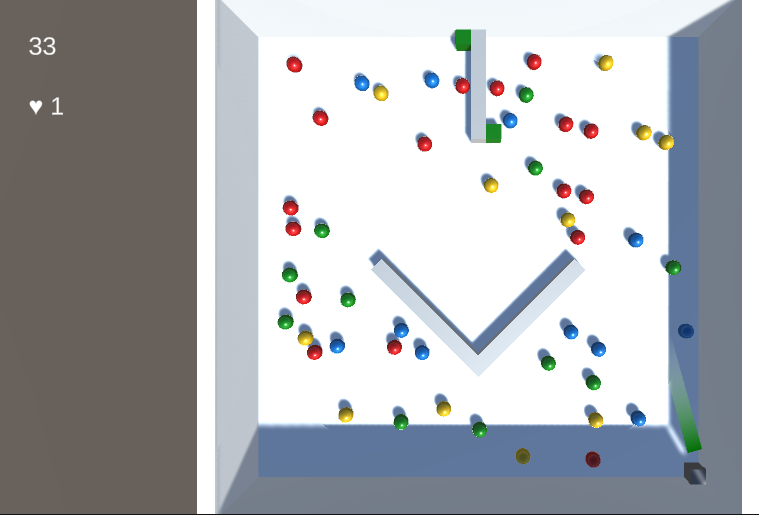
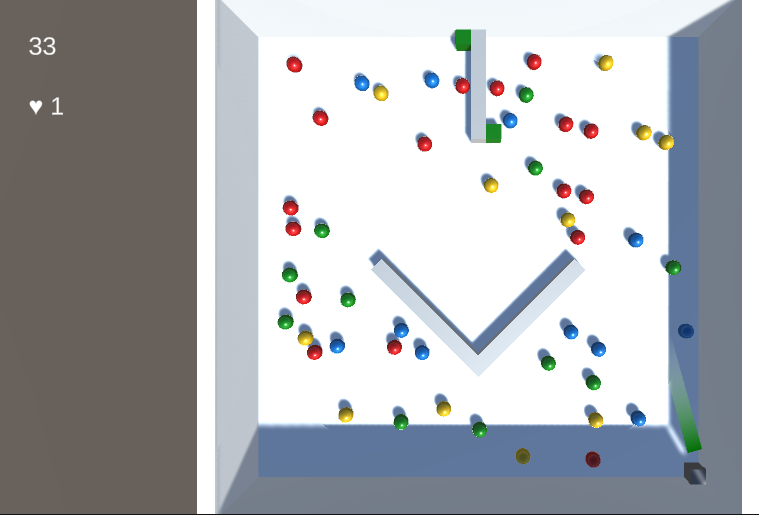
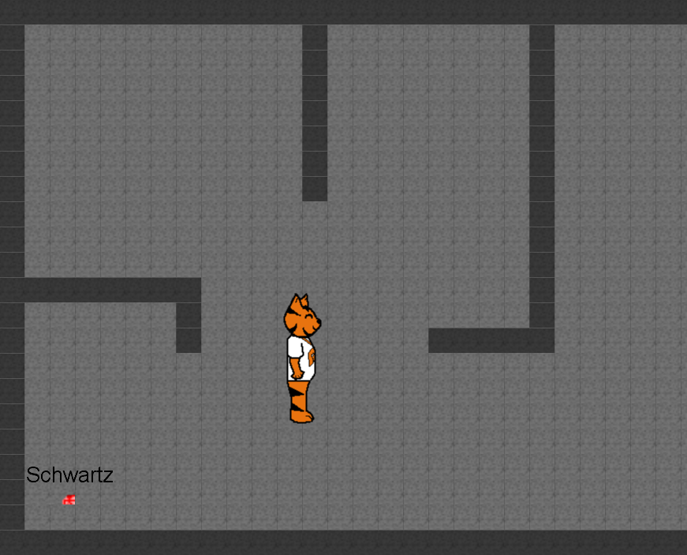
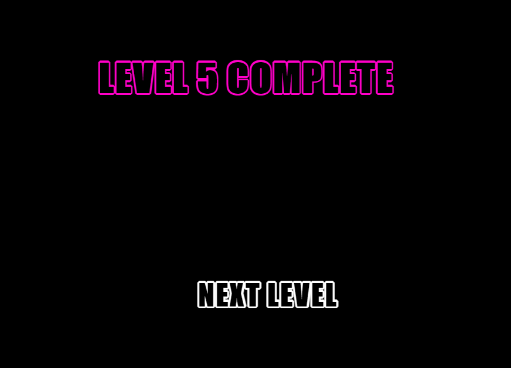
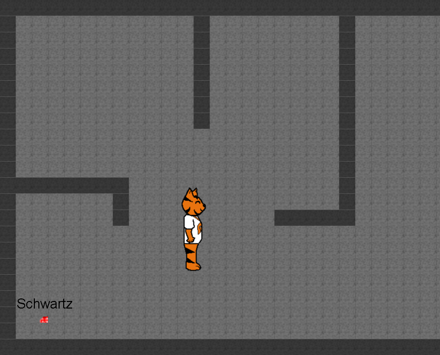
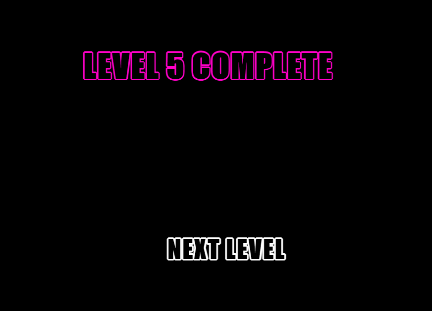

Project Beetle
This project seeks to answer the question: what would happen if Luxor, Puzzle Bobble, and Brick Breaker met, shook hands, and immediately decided to join forces? Drawing inspiration from each of these titles and remixing their distinctive mechanics, I hope to create a familiar - yet wholly fresh - medley of an experience.
At the time of writing, I am working toward making a functional proof-of-concept demo. This will be used for playtesting purposes, with results/feedback to be incorporated into a future iteration.
One change I am planning to make in the future is to refactor to include object pooling; since marbles get spawned and despawned frequently, this will alleviate memory allocation costs during levels. I also plan to design for accessibility, since much of the game's mechanics revolve around colour. Using symbols together with colours might be an avenue I will explore.
Dates:
May 2021 - Present
Language(s):
C#
Engine/Framework:
Unity3D
Assets:
TBD
Wall Dodger
My first personal passion project! This was a simple top-down endliess runner. Initially, I had no idea what procedural generation was, and with some investigation and planning, came up with a simple algorithm to dynamically generate terrain every session:
- To form a pathway, horizontal walls spawn in pairs consecutively “Flappy Bird” style, scrolling downward;
- Wall spawning is controlled using random number generation, with a chance of 8 different predefined structured terrain sections occurring intermittently to keep gameplay interesting;
- Walls get removed from the underlying List once out of bounds, freeing memory to be garbage-collected.
The predefined structured terrain sections include zigzags, obstacles in the middle of the pathway, and even a giant roundabout!
Check it out here.
Dates:
May - Jul 2020
Language(s):
C#
Engine/Framework:
MonoGame
Assets:
MS Paint
 



Luminescence
This was an individual project completed as part of coursework for a web design class
at RIT. It is a simple 2D avoid-and-collect game where the player must control an
onscreen sprite using their mouse to collect all orbs within a level in order to
advance. However, circles must be avoided at all costs!
This was my first game/interactive experience created using JavaScipt.
The idea was to make an experience that was immersive yet extremely simple to pick
up and play. The webpage was thus designed to amplify the immersion.
The game does come with sound effects. Either turn the volume up or down, or mute
the browser tab entirely - your preference!
Check it out here.
Dates:
May 2021
Language(s):
JavaScript ES6
Engine/Framework:
PixiJS
Assets:
opengameart.org
vectr.com

GET OUT (OF THY STOCKS)
GET OUT (OF THY STOCKS) was a submission for the RIT Game Dev Club's Summer Game Jam
2021, which lasted for 48 hours. The theme was "out of stock". I was part of a team
of 2 - we both wanted to explore the theme's boundaries, and quite literally went
back in time with our entry.
The aim of the game is to defend the main character from guards as they make their
escape from the medieval stocks. We used checkpoint-based pathfinding to
move characters around. Players fend guards off by interacting with
environment objects.
I took on multiple roles due to team size. I created UI and menu artwork, added
drag/drop/throw functionality as part of ways players interact with objects, and
wrote the story on prologue and epilogue screens. I also supplied core gameplay
mechanics. Our submission ended up winning Best Overall out of 9 entries.
Check it out here.
Dates:
May 2021
Language(s):
C#
Engine/Framework:
Unity2D
Assets:
vectr.com